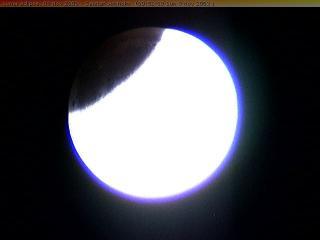
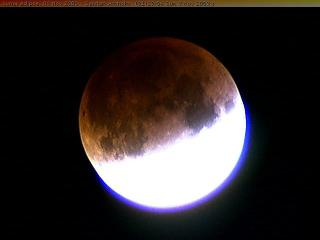
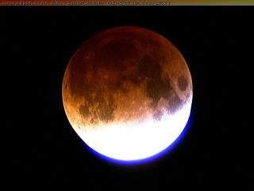
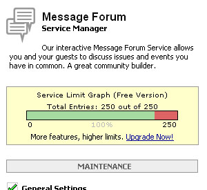

|
|
|
|
|
01/11/03 No Job, No Girl, No Vember Well I lied about the job, but I was right in that I haven't got one this week. I know I keep going on about it, but Ben said that work at McDonalds was really fun! And I can't wait to start there - loadsa £££ (and thats not 3 pounds, that means lots of pounds, I just put 3 because.... well... you know....) I've got one word and a couple of letters for you. F ZERO GX. What an awesome game! I played it most of yesterday, and I sneaked out to Ben's house for a couple of hours, considering he's already had the disease and his siblings are currently suffering the same as me. I hope (to the people that went) that you had a good time at the Halloween Party. I heard from my sister lots of gossip, but I'm sure there's more out there. I watched a DVD (well half a DVD, I fell asleep half-way through). I got 2wo links for you today: The F-ZERO GX treatment and Piccies! +^-^+
04/11/03 A birthday of two sorts First of all HAPPY BIRTHDAY KAT!! I didn't see her at all today. Hope the exam went well though Kat! And second of all, Shepherdnick.co.uk is officially one week old! I ain't got a lot else to say today because I'm knackered, and I got tonnes of school work piling up behind me. +^-^+ 05/11/03 Mr. Bland: A boy without culture I realised today (well the past couple of days really) that I haven't any culture. Most of my mates seem to have something specificially that they like and enjoy and are really good at, but me? No. I don't really have anything that I'm really good at that I can talk about either. I've sat down and wondered, what exactly is this web site about? From now on, I am officially searching for a new interest or something that I can talk about to people. And maybe even write about on this web site. I have noticed that no one reads anthing I write on here. In other news, I went to see the Matrix Revolutions and it was actually quite enjoyable. A little scarce with the details now and again, but it's a great film. A little too DragonBall Z for my liking... I have actually got work that I should be doing and am not. +^-^+ 07/11/03 Like greased cheaters on steroids How one description of the speed of F-Zero has been put. And I think it's quite accurate. Not much to report on of late. I gave Ben an ass kicking last night on F-Zero. Well, not so much of an ass kicking, because we were winning the same amount of races each time. We feel like NEO when he can see the code... I ended up avoiding my parents asking why I was in so late, by sleeping over Ben's. I just hope they forget about it before they get home from work today. Those Hardcore of you will realise theres a few slight changes to the site. My Dad emailed me with this pic: Look's like they found NEMO +^-^+ 09/11/03 A nice warm welcome is in order Bread of Heaven is now being hosted by me! Check out the site here: www.shepherdnick.co.uk/boh I gave Dave a helping hand until he gets used to uploading everything. As quite rightly said on ToBeOn, there was a lunar eclipse
last night, but due to the probability of Murphy's Law, a.k.a
Sod's Law, the sky was overcast and all that could be
seen was the feint reflection of my
angry face in the clouds!! Anyway, an alternative was found, and I watched it live on a web cam. Here are a few pics from it I managed to salvage.   Cool how the moon turns blood red isnt it? And in fact, it's not a trick of the camera, or a filter or anything, the moon does actually go that red! Here's a small description of why it does: During a total lunar eclipse, the Earth blocks all direct sunlight from the Moon. Astronauts on the Moon would then see the Earth eclipsing the Sun. (They would see a bright red ring around the Earth as they watched all the sunrises and sunsets happening simultaneousely around the world!) While the Moon remains completely within Earth's umbral shadow, indirect sunlight still manages to reach and illuminate it. However, this sunlight must first pass deep through the Earth's atmosphere which filters out most of the blue colored light. The remaining light is a deep red or orange in color and is much dimmer than pure white sunlight. Earth's atmosphere also bends or refracts some of this light so that a small fraction of it can reach and illuminate the Moon. If you would like to know more about lunar eclipses check out this link. See ya later hombrés (P.S. do you like the java clock?) +^-^+
10/11/03 Bread of Heaven's doing better than me! Officially, Dave's BoH got 39 hits yesterday, whilst mine got a measly 20. I've been a bit creative when I got home from school, and felt I needed to create something in HTML. I came up with this New Text Document. And I had a bit of response about the java clock. Tom, I know you hate it, but four other people can't be wrong! I've also been a bit obsessed with online clocks at the moment. Check out my clocks DIR. Not really much else to talk about.... OH YEAH, I thought this error 404 pic was cute ^^ +^-^+
12/11/03 DTB - Better as a BMP or a JPG? Depends on the DPI and the REZ! I've been making desktop backgrounds for people today. When I say people, I mean the HaRdCoRe Shepherdnick-ers. The rest of you want a Desktop Background? The Java clock seemed to have sparked up some controversy. Lush. If you wanna officially have your say, please feel free to vote in the poll. I seemed to have sparked some sort of creation thing. Dave wants his own web site, now Ben wants to learn HTML. I ain't got no problem with that, just don't get better than me!! (He He only joking!) BTW - Jay was sending this link out to people - check it out (if you dare.....) +^-^+
15/11/03 I'l have a Super Sized Double McJob with fries and a diet coke please Well I had my first shift last night and they started me on the till! Argh!!!! It was really hard work 'cos I didn't rightly know what the hell was on the menu!! After a while they put me on the chicken. And that means cooking it. Not standing on it!
I think in general, people like the Java Clock, but I think ToBeOn might be sabotaging the poll. That or he's jeleous of it. Either way its not moving from this page until the news post disappears. I thank you for taking part in it. _Dave says_ Buy my cream buns. they're grrreat! (do i get sued now?) Thank you Dave... +^-^+ 17/11/03 A gaming revolution, and a new forum I put a bit of work in for the games section today. Three little articles for you to read. And for those of you that missed the memo, here is a little piccy of the new forum that is soon to be online. I know you love it so. It features: Your very own passworded account, complete with profiles, profile pics, and signatures. HTML editable forum entries. Lush colours. No smileys (boo hoo! :'( ) And me as your moderator! My Dad also E-mailed this video to me which I found quite amusing. Sorry about the large file size. I see from the forums, that Drew started two threads that nearly need a page of their own. Check them out here. +^-^+ 18/11/03 The question is, Do I have any homework? Got a few more updates for you today. First is another games update/article/random randomness. The next is this stuff piece. I just put pieces up when I think of them. I've been keeping an online journal, since the beginning of November, and those of you with a password to the HaRdCoRe section can use the same password to view this. It's not much. Don't go getting too excited. The URL is http://shepherdnick.easyjournal.com. In other news, Tobeon has gone to the great effort of making a database of web sites that use the Javascript clock. I still reckon he jeleous of it. Thank you Tobeon for showing so much interest. +^-^+ 19/11/03 The answer is, More than I thought What a day, What a dollar. I made a page about Ben's Merio Karting goodness from last night. Dave and I left his house feeling warm inside, the way I haven't felt about a game in a long while. I love it :D In other news, I'm busy choosing what courses I want to take in University, and writing my personal statement, and hopefully finishing my Flash video which has to be in at the end of this week. Also, Ben will be online tomorrow hopefully! The clock is ticking... ... and it's also ticking for the new forum. (Last update with the clock - say your farewells) +^-^+ 20/11/03 Well this deserves a post of its own Wow, A thank you is in order to you guys. Without you the new forum couldnt have been made possible. As I said when I first posted the pic, I would wait until the old on is full, and just to confirm, this picture is on my Bravenet service status:  And then to cap it off, my inbox nearly fainted when I opened Outlook Express: 46 new posts on the forum in one day. I couldn't of asked for better acknowledgement. This also deserves a proper opening ceremony. Please be present and correct tomorrow at roughly 6 PM, for the official opening of the brand new forums. For all you people debating about the clock... I'm working on it OKies? I think it can stay for one more night, yeah? <SN>+^-^+ 21/11/03 WOOOOOH! IT'S A FORUM FRENZY!!!! Welcome, Welcome, Welcome. Today at roughly 6PM I will be releasing the forum to the masses. Also to celebrate, I think some people are making stuff, I know I've got a flash video waiting to be linked. It will be very soon. Now I have to go cook my dinner. Happy surfing peeps +^-^+ *UPDATE* OK, there you go then, the new forums are online and ready to go. You'll be pleased to know, that I've replaced the "annoying" Java Script clock, with even more annoying Ticker Tape!! (Don't worry, It's only on here for the weekend. Thanks to Jon for this congratulatory message: +^-^+ 26/11/03 No longer a rock concert virgin! WOW!! Linkin Park were amazing last night. I had so much fun!!! The support bands were kinda quiet, and no where near the standard as Linkin Park, but I respect them for getting up in front of us lot :D. As for the band, the songs they played were amazing. I loved "Breaking the Habit", "Faint" and "Nobody's Listening". They even invited a lad up on stage to play the guitar during Faint. He didn't cock up once. It was brilliant. Their encore had four more songs in it - amazing.
I'm suffering today though. My legs really hurt from all the jumping^, and I'm incredibly tired :O. But I am a HaRdCoRe school goer, and managed to crawl out of bed and walk to school this morning. I can't wait for Muse on monday now!! It's going to be awesome. Thanks to two people in particular: Tobeon and Saya. Otherwise known as Tom and Kat for their support for the new forum over the past couple of days. It's been great guys. Now I just gotta get you lot to start going there!!! Please do, its a lush forum (So I'm told). For you HaRdCoRe Shepherdnick-ers, I've got the more full intro to the web site for you. Find the link here. For you others, you can have the old music video. And for fans of the colour change that saw the new forum opened nicely, I archived the home page for you. Don't say I don't give you nowt. As for me, I'm off to go sleep now... +^-^+ 27/11/03 Damn Emotion Rollercoasters. I wish mine would crash and burn. I was told by my 'rents last night that I go out and socialise too much, and don't spend enough time studying, and this decision came after I asked whether I should drop Geography or not. So that put me on a bit of a downer. Because in order to show them that I really do care about school, and hope they can support me during University, I'm gonna have to make up time that I've lost whilst going out. So all social activities such as buying and playing games, web site updating and other such delights will have to take a back seat for a couple of months. Just until my exams are over. In more positive news, I sent an email to Cardiff University about the Computer Science course that I want to take but couldn't because they said you needed Maths AS. I got a very pleasing E-mail back today: "Dear Mr Shepherd Due to a recent Board of Studies meeting within the School of Computer Science we are now able to accept applicants without A or AS Mathematics for September 2004, into our undergraduate BSc Computer Science degree scheme. Under the old rules we asked for A or AS Mathematics or equivalent, your AS Physics fits that perfectly. You will be more than capable to undertake a BSc Computer Science degree with your mathematical background. We look forward to receiving your UCAS application in due course. Good luck with your examinations." Woo! I was happy to have this news. +^-^+
|
|
|
|
||